Trénink mládeže
4. lekce — Mat těžkou figurou, 1. část (23. 10. 2026)
-
Zkouška bez teorie
Než jsme cokoli vysvětlili, zkusil si každý dát mat proti trenérovi.
Dáma a král
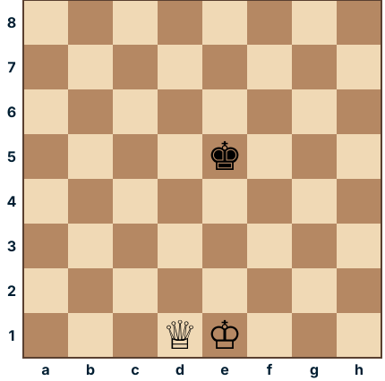
Bílý táhne a dá mat dámou. Dvě věže
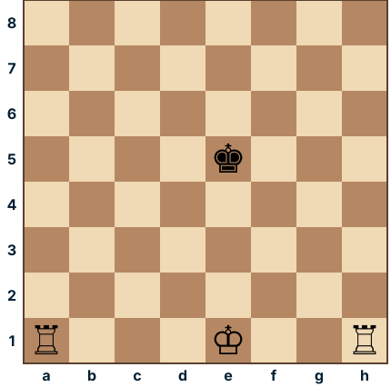
Bílý táhne a dá mat dvěma věžemi. Věž a král
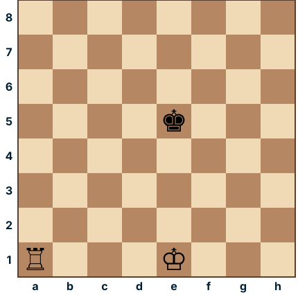
Bílý táhne a dá mat jednou věží. Tohle je nejtěžší. Následující teorii vysvětlíme na příští hodině.
-
Jak na to: zatlač krále na kraj
Uprostřed šachovnice má král kolem sebe 8 políček a utéct mu je snadné. Na kraji má jen 5 políček a v rohu jen 3. Mat těžkou figurou proto dáváme vždycky na kraji šachovnice. Plán je pokaždé stejný:
- Odřízni krále — figurou mu zavři řadu nebo sloupec, přes který nesmí.
- Zmenšuj mu prostor, dokud nestojí na kraji.
- Dej mat na kraji — a dej pozor, ať to není pat.
-
Mat dvěma věžemi — schody
Dvě věže zvládnou mat i bez pomoci krále. Střídají se jako nohy na schodech: jedna věž hlídá řadu, aby se král nemohl vrátit, druhá dá šach o řadu výš. Král musí ustoupit o řadu dál, pak si věže role vymění. Tak krále dotlačíme až na poslední řadu.
Schody
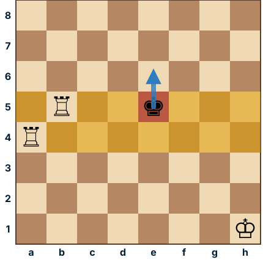
Věž a4 hlídá 4. řadu, věž b5 dává šach. Král musí nahoru na 6. řadu. Dál přijde Va6+, pak Vb7+ a Va8#. Pozor, král útočí!
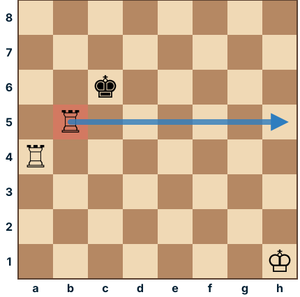
Když se král přiblíží a napadne věž, odtáhni ji na druhý konec řady (b5→h5). Řadu hlídá dál a král na ni nedosáhne. Mat
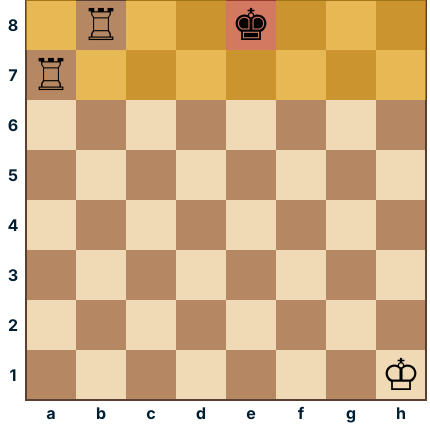
Věž a7 hlídá 7. řadu, věž b8 dává šach na 8. řadě: mat. -
Mat dámou — krabice
Dáma je silná, ale sama mat dát neumí — potřebuje pomoc krále. Plán:
- Postav dámu skokem jezdce od soupeřova krále. Tak ho zavře do „krabice“ a nedává šach.
- Kdykoli král v krabici uhne, posuň dámu znovu o skok jezdce za ním — krabice se zmenšuje.
- Když je král na kraji, přiveď svého krále blíž a dej mat.
Pozor na pat! Když je král zatlačený, zkontroluj před každým tahem, jestli bude mít soupeř ještě kam táhnout.
Krabice
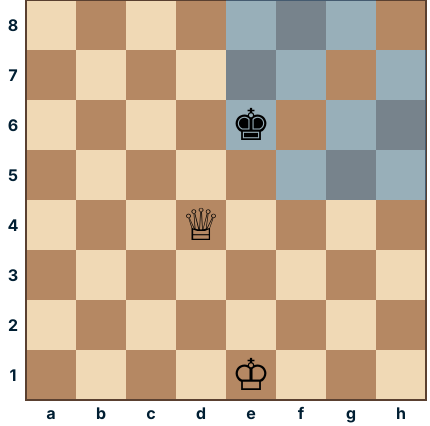
Dáma stojí skokem jezdce od krále (d4–e6). Král může chodit jen po modrých políčkách. Mat — polibek
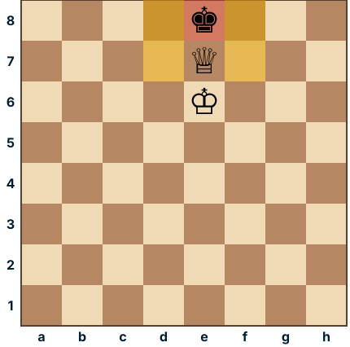
Dáma stojí těsně před králem a chrání ji vlastní král: mat. Mat po řadě
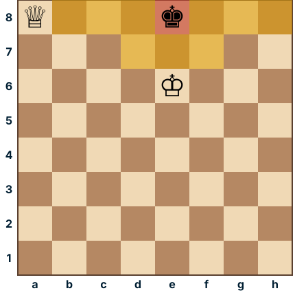
Bílý král hlídá 7. řadu, dáma dává šach po 8. řadě: mat. Pat — chyba!
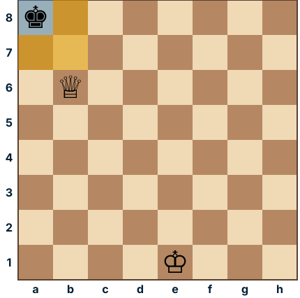
Černý je na tahu. Není v šachu, ale nemá kam táhnout: pat, remíza. Dáma krále zavřela moc brzy, bílý král je daleko. -
Mat jednou věží
Jedna věž potřebuje ještě víc pomoci od krále. Plán:
- Věží odřízni krále na řadě (nebo sloupci).
- Svým králem jdi naproti soupeřovu králi — tak, aby mezi nimi bylo jedno políčko (tomu se říká opozice).
- Když stojí králové naproti sobě, dej věží šach. Soupeřův král musí ustoupit o řadu dál.
- Když král uhne do strany, nemáš kam šachovat — udělej čekací tah věží po řadě (ať ji král nemůže vzít) a jdi zase králem naproti.
Odříznutí a šach
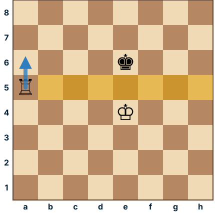
Věž hlídá 5. řadu, králové stojí naproti sobě. Teď Va6+ a černý král musí na 7. řadu. Mat
Králové stojí naproti sobě, věž dává šach po 8. řadě: mat.
Trénink mládeže
3. lekce — Šach, šachmat a pat (16. 10. 2026)
-
Šach
Šach znamená, že soupeř napadá krále. Na šach musíš hned odpovědět. Máš tři možnosti:
- Uhnout králem na políčko, které soupeř nenapadá.
- Vzít figurku, která šachuje.
- Zakrýt šach vlastní figurkou (proti jezdci to nejde).
Do šachu se táhnout nesmí.
Šach
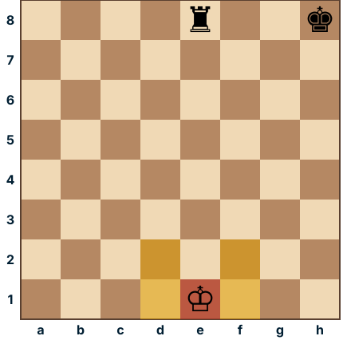
Věž dává šach. Král uhne na d1, f1, d2 nebo f2. -
Mat
Mat je šach, ze kterého není úniku. Král nemůže uhnout, šachující figurku nejde vzít ani zakrýt. Kdo dostal mat, prohrál.
Mat
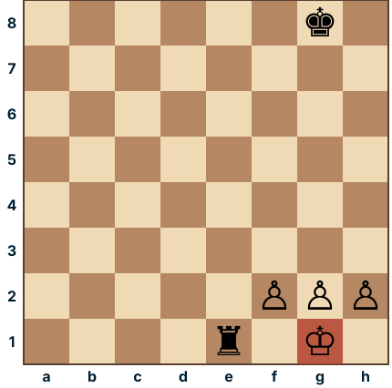
Věž dává šach. Král nemá kam uhnout, věž nejde vzít ani zakrýt: mat. -
Pat
Pat je, když hráč na tahu nemá žádný tah, ale jeho král není v šachu. Pat je remíza.
Pat
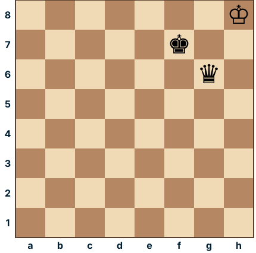
Bílý je na tahu. Král není v šachu, ale nemá kam táhnout: pat. -
Šach, mat, nebo pat?
Situace Je král v šachu? Má hráč tah? Výsledek šach ano ano hraje se dál mat ano ne prohra pat ne ne remíza -
Úkoly


Trénink mládeže
2. lekce — Šachovnice (9. 10. 2026)
-
Úvodní hra
Hodinu jsme opět začali partií. Každý si sedl k šachovnici a zahrál si, abychom se rozehřáli a abychom měli na čem ukazovat, co se budeme učit dál.
-
Šachovnice: políčko, sloupec, řada a diagonála
Šachovnice má 8 × 8 = 64 políček, střídavě světlých a tmavých. Správně položená šachovnice má vpravo dole u každého hráče světlé políčko (pomůcka: „světlá vpravo“). Bílý hraje odspodu, černý shora.
Sloupec je svislá čára políček, která vede od bílého hráče k černému. Sloupců je osm a označujeme je písmeny a, b, c, d, e, f, g, h — zleva doprava z pohledu bílého. Písmena najdeš na spodním (a horním) okraji šachovnice.
Řada je vodorovná čára políček, která vede zleva doprava. Řad je také osm a označujeme je čísly 1 až 8 — počítá se od bílého: na 1. řadě stojí na začátku bílé figury, na 2. řadě bílí pěšci, na 7. řadě černí pěšci a na 8. řadě černé figury. Čísla najdeš na levém (a pravém) okraji šachovnice.
Políčko je místo, kde se sloupec a řada protínají. Jméno políčka proto složíme ze dvou částí: nejdřív písmeno sloupce, potom číslo řady. Například políčko e4 leží ve sloupci e a ve 4. řadě. Každé políčko má jméno, které se na šachovnici nikde jinde neopakuje, takže podle něj vždy přesně víme, kam figurka táhla. Levé dolní políčko je a1 (tmavé), pravé horní h8 (také tmavé). Bílý král začíná na e1, bílá dáma na d1, černý král na e8 a černá dáma na d8.
Diagonála je šikmá čára políček, která se dotýkají jen rohy. Všechna políčka jedné diagonály mají stejnou barvu. Nejdelší diagonály mají 8 políček: a1–h8 (samá tmavá políčka) a h1–a8 (samá světlá políčka). Ostatní diagonály jsou kratší — nejkratší mají jen dvě políčka (např. a7–b8 nebo g1–h2).
Sloupec
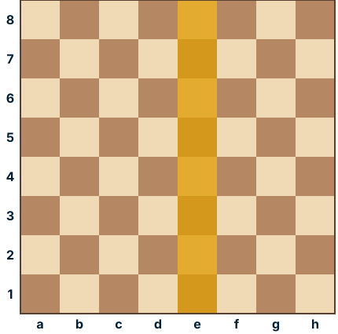
Sloupec je svislý. Zvýrazněný je sloupec e (políčka e1 až e8). Řada
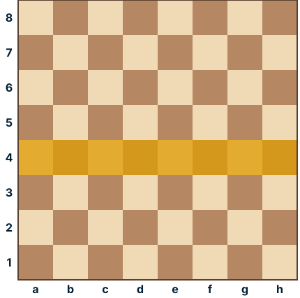
Řada je vodorovná. Zvýrazněná je 4. řada (políčka a4 až h4). Diagonála
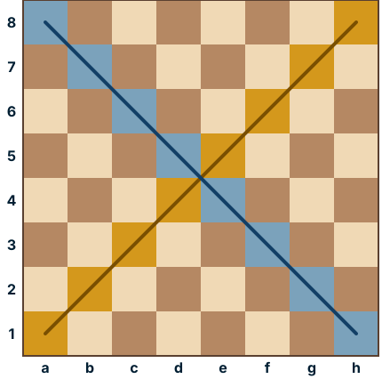
Diagonála je šikmá. Zvýrazněné jsou dvě nejdelší: a1–h8 (oranžově, tmavá políčka) a h1–a8 (modře, světlá políčka). -
Hodnota figurek
Abychom věděli, jestli se nám vyplatí něco vyměnit nebo obětovat, počítáme figurky v bodech. Hodnota odpovídá tomu, kolik toho figurka na šachovnici zvládne — čím víc políček ovládá, tím je cennější.
Figurka Body ♕ dáma 9 (10) ♖ věž 5 ♘ jezdec (kůň) 3 ♗ střelec 3 ♙ pěšec 1 Dáma se počítá za 9 bodů, někdy se uvádí i 10 — je to nejsilnější figura, protože spojuje sílu věže i střelce. Jezdec a střelec jsou zhruba stejně cenní, proto jim říkáme lehké figury; věž a dáma jsou těžké figury. Král nemá bodovou hodnotu — je nevyčíslitelný, protože když dostane mat, partie končí.
Příklad: když vezmeš soupeři věž (5) a on tobě jezdce (3), vydělal sis 2 body. Vyměnit dámu za věž se naopak nevyplatí.
Proč mají figurky takovou hodnotu, je vidět z toho, jak táhnou:
- ♔ Král táhne o jedno políčko libovolným směrem — po sloupci, po řadě i po diagonále. Nesmí vstoupit na políčko, které napadá soupeř, a dva králové nikdy nemohou stát vedle sebe. Jednou za partii smí udělat rošádu spolu s věží.
- ♕ Dáma táhne o libovolný počet políček po sloupci, po řadě i po diagonále — umí tedy totéž co věž a střelec dohromady. Z prostředka šachovnice ovládá až 27 políček, proto je nejcennější.
- ♖ Věž táhne o libovolný počet políček po sloupci nebo po řadě. Z kteréhokoli políčka na prázdné šachovnici ovládá vždy 14 políček.
- ♗ Střelec táhne o libovolný počet políček po diagonále. Celou partii proto zůstává na políčkách jedné barvy — každý hráč má jednoho „světlopolného“ a jednoho „tmavopolného“ střelce.
- ♘ Jezdec táhne do tvaru písmene L: dvě políčka rovně a jedno do strany. Jako jediná figurka umí přeskakovat ostatní figurky. Po každém tahu změní barvu políčka (ze světlého skočí na tmavé a naopak).
- ♙ Pěšec táhne jen dopředu po svém sloupci o jedno políčko; ze svého výchozího postavení (bílý z 2. řady, černý ze 7. řady) smí táhnout i o dvě. Bere však šikmo — o jedno políčko dopředu po diagonále. Nikdy necouvá. Když dojde na poslední řadu, promění se v dámu, věž, střelce nebo jezdce (nejčastěji v dámu).
Ostatní figurky (kromě jezdce) nemohou přeskakovat — když jim do cesty vstoupí vlastní figurka, dál nepokračují; na políčko se soupeřovou figurkou mohou vstoupit a vzít ji.
Král
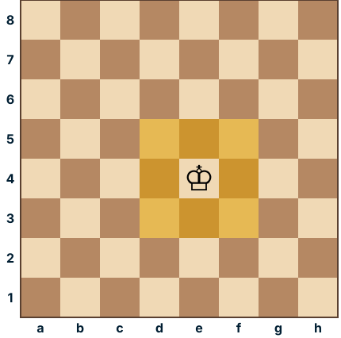
Dáma
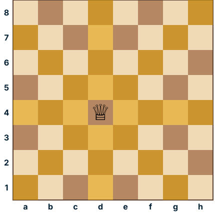
Věž
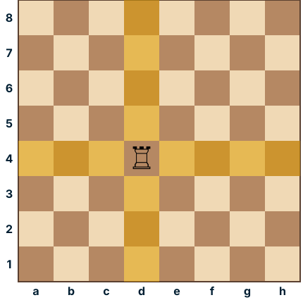
Střelec
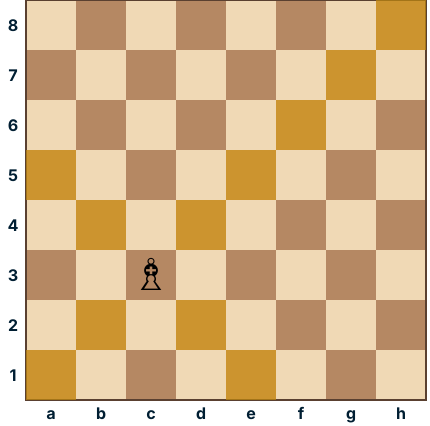
Jezdec
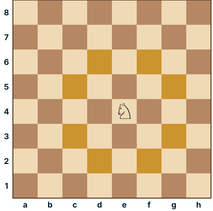
Pěšec
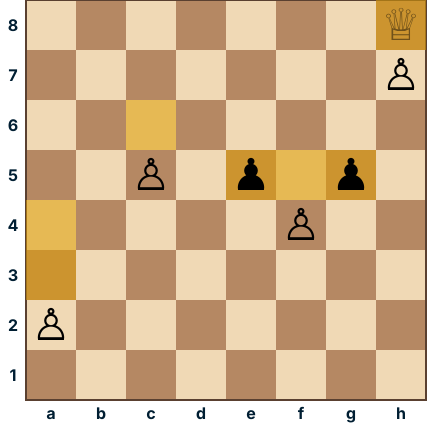
a2 — z výchozího postavení o jedno nebo o dvě (a3, a4). c5 — uprostřed jen o jedno (c6). f4 — rovně na f5, nebo bere šikmo na e5 či g5. h7 — na poslední řadě se promění, nejčastěji v dámu. -
Ovečky a vlk — opakování
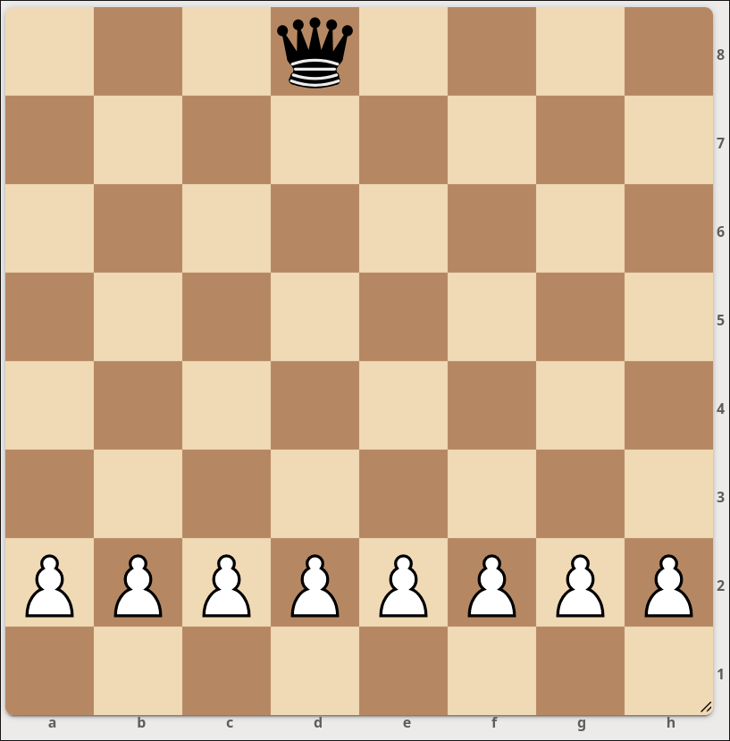
Zopakovali jsme si minihru z minulé lekce. Bílý (ovečky) začíná. Když dojde pěšcem na poslední řadu, vyhrává. Černá dáma (vlk) se snaží všechny pěšce sebrat dřív.
Domácí úkol
Tři políčka už mají napsané jméno, ostatní mají ?. Doplň jména všech políček s otazníkem — nejdřív písmeno sloupce, potom číslo řady (např. e4).
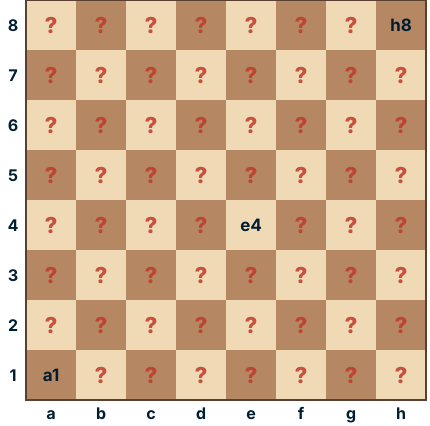
Domácí úkol pro pokročilé
Nakresli si sám jen mřížku 8 × 8 políček — bez čísel a písmenek po stranách. Šachovnici máš otočenou tak, jako by ses na ni díval za černého. Do každého políčka napiš jeho jméno. Pozor: vlevo dole teď není a1, ale h8! Tři políčka máš pro kontrolu napsaná.
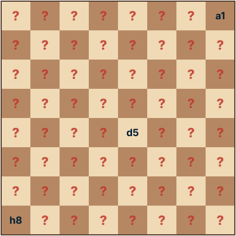
Trénink mládeže
1. lekce — úvodní hodina (2. 10. 2026)
-
Seznámení
Zjistili jsme, že všichni umí táhnout figurkami, proto jsme rovnou přešli k úvodní hře. K jednotlivým figurkám se ale v budoucnu určitě ještě několikrát vrátíme.
-
Úvodní hra
Zatímco se Hradiště poprvé chodilo dívat na nový zimní stadion a na Masarykově náměstí se chystal průvod broučků s lampiónky, v Salónku Na Koruně bylo ticho a soustředění. Každý si sedl k šachovnici a odehrál svou úvodní partii. Led se prolomil i u nás, jen bez bruslí.
-
Šachové minihry
1. hra
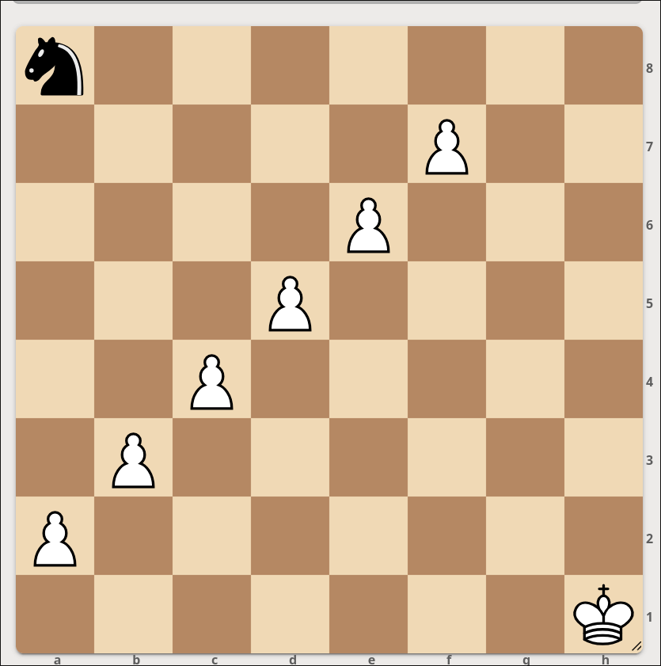
Bílý (automat) táhne jen v případě, že má co brát. Černý (hráč) má vysbírat pěšce a nakonec vzít krále. 2. hra — Ovečky a vlk
Bílý začíná. Když dojde pěšcem na poslední řadu, vyhrává. -
Mat dvěma těžkými figurami
Domácí úkol
Výjimečně žádný.